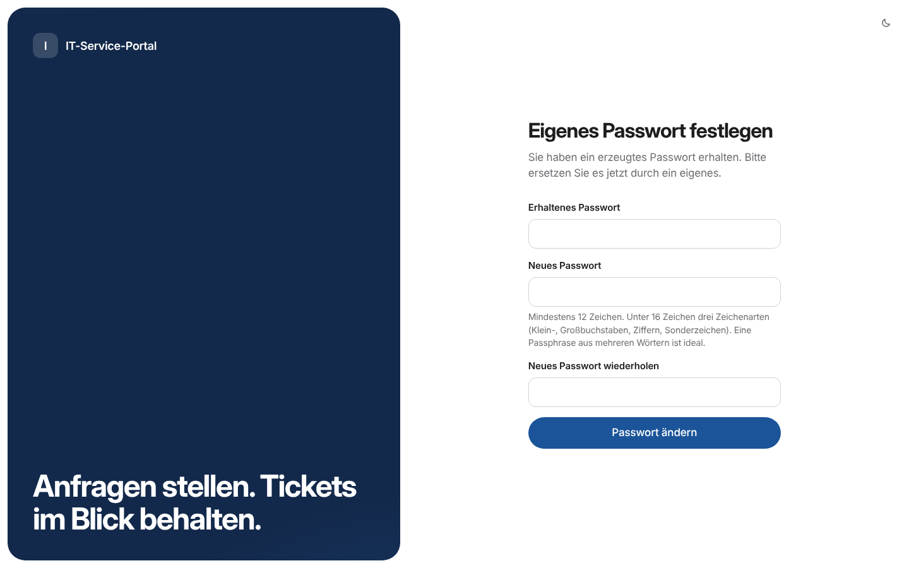
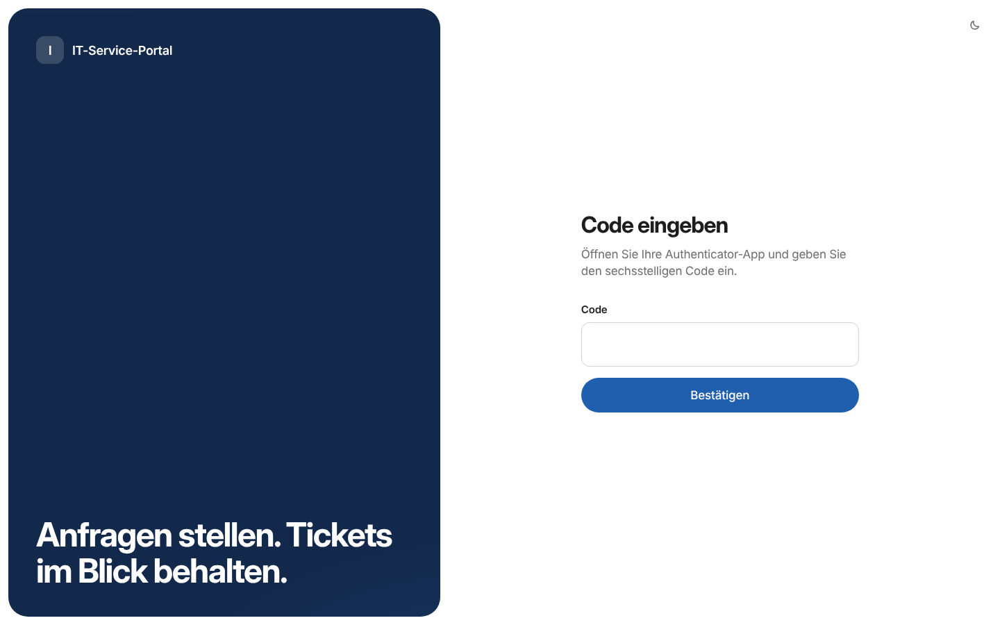
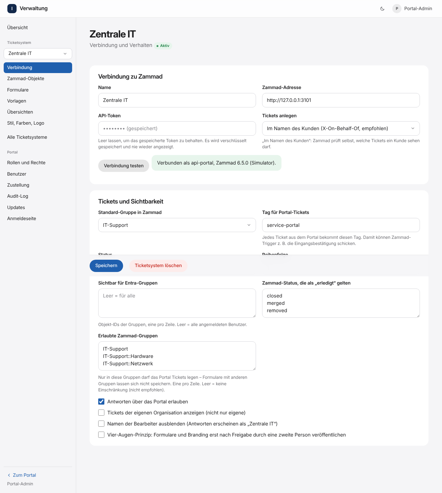
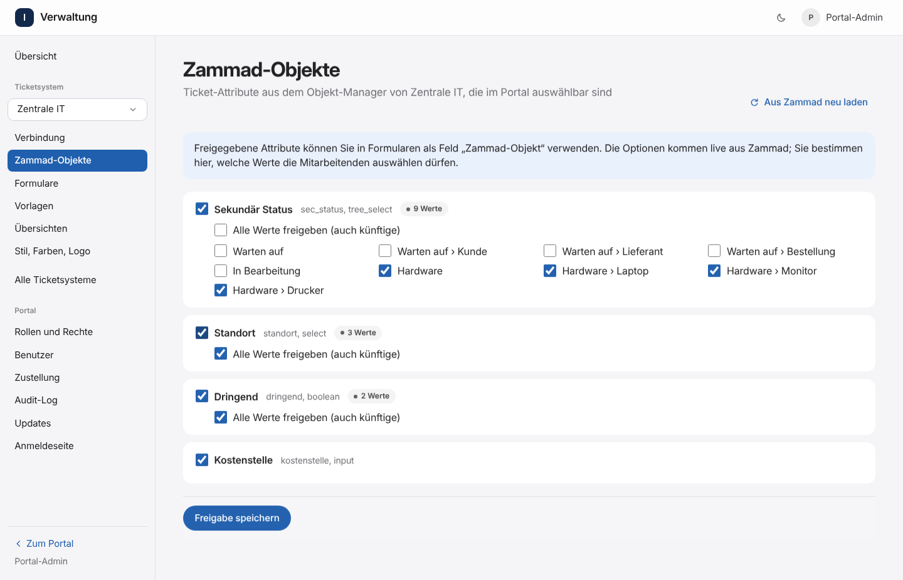

Installation#
Schnellinstallation (ein Befehl)#
curl -fsSL https://raw.githubusercontent.com/Hundexe/Zammad-Service-Portal/main/setup.sh | sudo bashDas Skript (setup.sh im Repository) fragt zuerst nach der Variante:
- Docker – installiert Docker bei Bedarf (offizielles Skript von get.docker.com), holt den Code nach
/opt/zammad-service-portalund startetdeploy/install.sh. - Direkt auf Debian/Ubuntu (ohne Docker) – startet
deploy/native/install.sh, siehe Variante ohne Docker. - Nur ausprobieren – Demo mit Beispieldaten auf Port 3000, siehe Demo.
In beiden echten Varianten folgen dieselben Fragen: Hostname oder IP, HTTPS- und HTTP-Port, Virenscanner, optional Microsoft-Anmeldung, erster Admin und optional ein normaler Testbenutzer. Mehr ist für einen ersten Test nicht nötig – weiter mit Erste Anmeldung und Zammad verbinden.
| Option | Wirkung |
|---|---|
… | sudo bash -s -- --docker | Variante 1 ohne Menü (--debian, --demo entsprechend) |
… | sudo bash -s -- --docker --ja | zusätzlich ohne Rückfragen: IP des Servers, freie Ports, Virenscanner je nach RAM |
… | sudo PORTAL_DIR=/srv/portal bash | anderes Zielverzeichnis |
… | sudo PORTAL_REF=vX.Y.Z bash | bestimmte Version (Tag aus Releases) statt main |
Aktualisieren: denselben Befehl noch einmal ausführen. Einstellungen, Schlüssel, Daten und Benutzer bleiben erhalten.
Die folgenden Abschnitte beschreiben die Docker-Installation Schritt für Schritt, falls du jeden Schritt selbst machen willst, und was in Entra ID und Zammad einzurichten ist.
Dauer: etwa eine Stunde, davon das meiste in Entra ID und Zammad.
Übersicht#
- VM vorbereiten
- Betriebsbenutzer anlegen
- Code holen
- Microsoft Entra ID: App registrieren
- Zammad: API-Benutzer und Token
- Konfiguration
- Installieren und ersten Admin anlegen
- Erste Anmeldung
- Zammad verbinden und Formulare anlegen
- Rechte für Entra-Gruppen vergeben
- Zum Schluss: absichern
1. VM vorbereiten#
| Empfehlung | |
|---|---|
| Betriebssystem | Debian 12 oder 13 (andere Linux-Distributionen mit Docker gehen auch) |
| CPU / RAM | 2 vCPU, 4 GB RAM (ClamAV braucht allein etwa 1,5 GB) |
| Festplatte | 20 GB |
| Netz | nur im internen Netz, feste IP, DNS-Eintrag z. B. serviceportal.firma.intern |
| Software | Docker Engine mit Compose-Plugin (docker compose version ≥ 2.20), git, openssl |
Eine VM ist besser geeignet als ein LXC-Container: Docker im LXC braucht verschachtelte Container und schwächt die Isolation.
Firewall (Proxmox-Firewall oder nftables auf der VM): eingehend nur TCP 443 (und 80 für die Weiterleitung auf HTTPS) aus den internen Netzen, SSH nur aus dem Admin-Netz. Ausgehend braucht die VM:
| Ziel | Wofür |
|---|---|
login.microsoftonline.com, graph.microsoft.com | Anmeldung, Abteilung des Benutzers |
| eure Zammad-Instanz(en) | Tickets anlegen und lesen |
github.com (SSH, Port 22) | Updates holen (nur mit Profil updater) |
Docker Hub, gcr.io | Basis-Images beim Bauen |
database.clamav.net | Virensignaturen (nur mit Profil clamav) |
2. Betriebsbenutzer anlegen#
Das Portal läuft nicht unter root. Lege einen normalen Benutzer mit generiertem Passwort an, der Docker bedienen darf:
PW=$(openssl rand -base64 18)
sudo useradd --create-home --shell /bin/bash --groups docker portal
echo "portal:$PW" | sudo chpasswd
echo "Passwort für portal: $PW" # im Passwort-Tresor ablegen
sudo passwd --expire portal # muss bei der ersten Anmeldung geändert werdenWer in der Gruppe
dockerist, hat auf der VM praktisch root-Rechte. Den Benutzerportalalso nur Admins geben und per SSH-Schlüssel anmelden.
Weiter als dieser Benutzer: sudo -iu portal
3. Code holen#
sudo mkdir -p /opt/zammad-service-portal && sudo chown portal: /opt/zammad-service-portal
git clone https://github.com/Hundexe/Zammad-Service-Portal.git /opt/zammad-service-portal
cd /opt/zammad-service-portal
git tag -l 'v*' # vorhandene Release-Tags
git checkout vX.Y.Z # für den Betrieb einen signierten Release-Tag verwenden, zum Ausprobieren geht auch mainDas Repository ist öffentlich, ein Schlüssel ist zum Klonen und für Updates nicht nötig.
Eigene private Kopie (Fork)? Dann mit einem Deploy-Key klonen, der nur lesen darf:
ssh-keygen -t ed25519 -N "" -C "serviceportal-vm" -f ~/.ssh/serviceportal_deploy
cat ~/.ssh/serviceportal_deploy.pub # eine Zeile, beginnt mit ssh-ed25519Den öffentlichen Schlüssel in GitHub unter Repository → Settings → Deploy keys → Add deploy key eintragen (Haken bei „Allow write access“ nicht setzen), dann:
GIT_SSH_COMMAND="ssh -i ~/.ssh/serviceportal_deploy" git clone git@github.com:<konto>/<repo>.git /opt/zammad-service-portal
cd /opt/zammad-service-portal
git config core.sshCommand "ssh -i ~/.ssh/serviceportal_deploy"
# Für den Updater: Deploy-Key bereitstellen
cp ~/.ssh/serviceportal_deploy deploy/secrets/deploy_key && chmod 600 deploy/secrets/deploy_key4. Microsoft Entra ID: App registrieren#
Die ausführliche Anleitung mit allen Klicks, Rechten, zwei Tenants, Zertifikat statt Secret, Test und Fehlertabelle steht in docs/ENTRA.md. Kurzfassung:
- App-Registrierung, Plattform Web, Umleitungs-URIs
https://serviceportal.firma.intern/api/auth/entra/callbackundhttps://serviceportal.firma.intern/. - Client-Secret (Wert in
deploy/secrets/entra_client_secret) oder Zertifikat. - API-Berechtigungen: nur delegiert
openid,profile,email,User.Read→ Administratorzustimmung erteilen. Keine Anwendungsberechtigungen. - Tokenkonfiguration: Gruppenanspruch „Der Anwendung zugewiesene Gruppen“ als Gruppen-ID; optionaler Anspruch
auth_timeim ID-Token. - Unternehmensanwendung: „Zuweisung erforderlich“ = Ja, Gruppen zuweisen; bedingter Zugriff mit MFA.
- Bei zwei Tenants: Kontotyp und
ENTRA_ALLOWED_TENANTSnach der Tabelle in ENTRA.md, Abschnitt 3. - Anwendungs-ID (Client) →
ENTRA_CLIENT_ID, Verzeichnis-ID →ENTRA_TENANT_ID.
5. Zammad: API-Benutzer und Token#
Pro Zammad-Instanz (für den Test erst das Test-Zammad):
- Rolle anlegen (Einstellungen → Rollen → Neu), z. B.
Self-Service-Portal API, mit den Rechten:admin.user– Kunden suchen/anlegen und Tickets im Namen des Kunden (X-On-Behalf-Of) anlegen und lesenadmin.object– Ticket-Attribute aus dem Objekt-Manager lesen (für die Freigabe im Portal)ticket.agentmit Zugriff Anlegen + Lesen + Ändern auf alle Gruppen, in die das Portal Tickets legt
- Benutzer anlegen, z. B.
service-portal@firma.intern, nur mit dieser Rolle. Für ihn ein langes, zufälliges Passwort setzen und nirgends verwenden. Als dieser Benutzer anmelden: Profil → Token-Zugriff → Neuer persönlicher Token, Name
Self-Service-Portal, Rechteadmin.user,admin.object,ticket.agent. Den Token notieren – er wird später in der Admin-Oberfläche eingetragen und dort verschlüsselt gespeichert. Welche Rechte braucht welche Betriebsart? (Einstellung „Tickets anlegen“ am Ticketsystem)Im Namen des Kunden ( on_behalf_of, Standard)Als Portal-Benutzer mit Kundenfeld ( customer_field)Rechte des API-Benutzers admin.user,ticket.agent(nur Portal-Gruppen), optionaladmin.objectticket.agent(nur Portal-Gruppen), optionaladmin.objectWarum Zammad erlaubt X-On-Behalf-Ofnur mitadmin.userKunden suchen und anlegen geht mit Agentenrechten Wer prüft, welche Tickets ein Kunde sieht Zammad (Kundensicht) und das Portal nur das Portal (Kunden-ID, Organisation, interne Notizen werden herausgefiltert – getestet) Ticket-Ersteller in Zammad der Kunde der API-Benutzer Risiko bei gestohlenem Token Benutzerverwaltung in Zammad Lesen/Ändern der Tickets in den Portal-Gruppen Empfehlung:
on_behalf_of, weil Zammad dann selbst eine zweite Prüfung macht. Weradmin.usernicht vergeben möchte, nimmtcustomer_field. In beiden Fällen: eigener Benutzer, nur die Gruppen, in die das Portal Tickets legt (in der Verwaltung unter Erlaubte Zammad-Gruppen dieselbe Liste eintragen), keine Organisationen außer den nötigen, Token jährlich erneuern, Rechte bei jedem Zammad-Update prüfen.admin.objectbraucht es nur zum Lesen der Ticket-Attribute; nach der Freigabe kann es wieder entfernt werden (bis zur nächsten Änderung).Eingangsbestätigung per Trigger (Zammad verschickt alle Mails, das Portal keine): Einstellungen → Trigger → Neu
- Bedingung: Aktion ist erstellt und Tags enthält einen von
service-portal - Aktion: E-Mail an Kunde, Betreff z. B.
Ihre Anfrage #{ticket.number}: #{ticket.title}Der Tagservice-portalwird an jedes Ticket aus dem Portal gehängt (pro Ticketsystem änderbar). Damit lassen sich auch Übersichten und Berichte in Zammad bauen.
- Bedingung: Aktion ist erstellt und Tags enthält einen von
6. Konfiguration#
Das Installationsskript fragt alles Nötige ab und schreibt es nach deploy/.env:
cd /opt/zammad-service-portal/deploy
./install.sh| Frage | Vorgabe | Hinweis |
|---|---|---|
| Hostname oder IP | IP der VM | Mit DNS-Eintrag den Namen nehmen (z. B. serviceportal.firma.intern), zum Testen reicht die IP |
| HTTPS-Port | 443 | Ist er belegt, schlägt das Skript einen freien vor (z. B. 8443) |
| HTTP-Port | 80 | Leitet nur auf HTTPS weiter |
| Virenscanner (ClamAV) | ja ab 4 GB RAM | Braucht etwa 1,5 GB RAM |
| Updates aus der Oberfläche | nein | Startet den Update-Dienst (siehe Updates) |
| Microsoft-Anmeldung | nein | Tenant-ID, Client-ID, erlaubte Tenants, Client-Secret aus Schritt 4. Das Skript zeigt die passende Weiterleitungs-URI an |
| Erster Admin, normaler Testbenutzer | admin, test.user | Beide bekommen ein generiertes Passwort |
PUBLIC_URL und PORTAL_DIR setzt das Skript selbst. Beim erneuten Aufruf fragt es, ob die Einstellungen geändert werden sollen; Schlüssel, Daten und Benutzer bleiben erhalten. Für Automatisierung gibt es ./install.sh --ja: keine Rückfragen, alle Werte aus deploy/.env.
Wer lieber selbst editiert: cp .env.example .env, Werte eintragen, dann ./install.sh --ja. Mindestens nötig sind PORTAL_HOST und PUBLIC_URL; bei einem anderen HTTPS-Port als 443 gehört er in PUBLIC_URL (https://serviceportal.firma.intern:8443). Zusätzlich empfohlen: ADMIN_ALLOWED_CIDRS (Admin-Netz, z. B. 10.10.50.0/24).
Alle weiteren Einstellungen (Kontosperre, 2FA-Pflicht, Sitzungszeiten, Passwortlänge usw.) stehen kommentiert in derselben Datei und haben sichere Standardwerte. Übersicht: Betrieb → Einstellungen ändern.
Ohne DNS-Eintrag: Mit der IP als Hostname stellt die interne CA von Caddy ein Zertifikat für die IP aus; der Browser warnt, bis das Stammzertifikat verteilt ist. Für die Microsoft-Anmeldung braucht es später einen richtigen Hostnamen.
Zertifikat: Das Portal ist nur intern erreichbar, daher gibt es kein Let's Encrypt. Zwei Möglichkeiten, eingestellt in deploy/caddy/tls.caddy:
- Firmen-CA (empfohlen): Zertifikat für
serviceportal.firma.internvon eurer internen CA ausstellen lassen.portal.crt(inkl. Zwischenzertifikaten) undportal.keynachdeploy/certs/legen, intls.caddydie Zeiletls /certs/portal.crt /certs/portal.keyaktivieren undtls internalauskommentieren. - Interne CA von Caddy: funktioniert ohne Zutun. Das Stammzertifikat muss dann per GPO an die Clients verteilt werden (Ablageort siehe Betrieb).
7. Installieren und ersten Admin anlegen#
Das erledigt derselbe Aufruf von ./install.sh aus Schritt 6. Das Skript:
- prüft Docker, die Einstellungen und ob die Ports frei sind,
- erzeugt den Hauptschlüssel (
secrets/secret_key) und setzt die Dateirechte, - baut die Images und startet den Stack,
- legt den ersten Admin mit generiertem Passwort an und auf Wunsch einen normalen Testbenutzer,
- zeigt am Ende die Adresse des Portals und die IP der VM.
Am Ende steht ein Kasten mit Benutzername und Passwort. Das Passwort erscheint nur dieses eine Mal.
┌──────────────────────────────────────────────────────────┐
│ Benutzer angelegt │
│ │
│ Benutzername: admin │
│ Passwort: tYK?v4nu#@LR%4HnAmqn │
│ Rolle: Super-Admin │
│ … │
└──────────────────────────────────────────────────────────┘Einen normalen Benutzer (z. B. zum Testen ohne Microsoft-Konto) legst du genauso an – ohne --role bekommt er nur die Rolle „Benutzer“:
docker compose exec app /nodejs/bin/node src/server/cli.ts user:create \
--username test.user --name "Test User" --email test.user@firma.deDie E-Mail-Adresse ist wichtig: Über sie findet das Portal den Kunden in Zammad. Weitere Befehle stehen in Betrieb.
8. Erste Anmeldung#
https://serviceportal.firma.internöffnen → Mit lokalem Konto anmelden.- Benutzername und generiertes Passwort eingeben.
Eigenes Passwort festlegen (mindestens 12 Zeichen; eine Passphrase aus mehreren Wörtern ist ideal).

Zwei-Faktor-Anmeldung einrichten: QR-Code mit dem Microsoft Authenticator scannen und den Code eingeben. Für Konten mit Verwaltungsrechten ist das Pflicht.
Bei jeder weiteren Anmeldung fragt das Portal nach Passwort und Code:

Diese Screenshots stammen aus einem Testlauf des echten Docker-Stacks (
install.sh→ Erstanmeldung → Verwaltung).
9. Zammad verbinden und Formulare anlegen#
- Verwaltung → Alle Ticketsysteme → Ticketsystem hinzufügen: Name (z. B.
Zentrale IT), Kürzel, Zammad-Adresse, API-Token aus Schritt 5, Standard-Gruppe. Verbindung testen – es muss „Verbunden als service-portal…“ erscheinen.

Zammad-Objekte: Ticket-Attribute auswählen, die im Portal auswählbar sein sollen, und ggf. die erlaubten Werte einschränken.

Formulare → Formular anlegen, Felder hinzufügen, unter „Ticket“ Gruppe, Tags und Titel festlegen, Veröffentlichen.
Farben und Logo pro Ticketsystem festlegen, damit Mitarbeitende sofort sehen, wohin ihre Anfrage geht.
Für ein zweites Zammad (z. B. eines weiteren Standorts) Schritte 1–5 wiederholen. Formulare lassen sich in der Formularliste über Kopieren … übernehmen.
Zum Testen gegen das Test-Zammad: dort den API-Benutzer wie in Schritt 5 anlegen, im Portal als eigenes Ticketsystem (z. B. „Test“) eintragen und unter Tickets und Sichtbarkeit → Sichtbar für Entra-Gruppen auf eine Testgruppe beschränken. So sehen nur Testpersonen das Test-System.
10. Rechte für Entra-Gruppen vergeben#
Verwaltung → Rollen und Rechte → Rolle zuordnen. Die Objekt-ID der Gruppe steht im Entra Admin Center bei der Gruppe.
| Rolle | typische Zuordnung |
|---|---|
| Super-Admin | Gruppe der Portal-Verantwortlichen, alle Ticketsysteme |
| Ziel-Admin | IT-Team eines Standorts, nur „sein“ Ticketsystem |
| Formular-Editor | Personen, die Formulare pflegen; Veröffentlichen übernimmt jemand anders |
| Auditor | Datenschutz/Revision |
| Benutzer | ist standardmäßig „allen angemeldeten Benutzern“ zugeordnet |
Danach als Microsoft-Benutzer anmelden und prüfen, ob die Verwaltung erreichbar ist.
11. Zum Schluss: absichern#
- [ ]
ADMIN_ALLOWED_CIDRSauf das Admin-Netz setzen - [ ] Wenn Microsoft-Anmeldung und Gruppenrechte funktionieren: lokales Konto
adminals Notfallkonto behalten (Passwort im Tresor) oderLOCAL_LOGIN_ENABLED=falsesetzen - [ ] Hauptschlüssel
deploy/secrets/secret_keyim Passwort-Tresor sichern – ohne ihn sind Zammad-Tokens und 2FA-Geheimnisse im Backup nicht lesbar - [ ] Sicherung einrichten (Betrieb)
- [ ] Signierte Updates einrichten (Updates)
- [ ] Ablaufdatum des Entra-Client-Secrets im Kalender
Nach jeder Änderung an .env: docker compose up -d.
Variante ohne Docker#
deploy/native/install.sh (oder Variante 2 von setup.sh) installiert das Portal direkt auf Debian 12/13 oder Ubuntu 22.04/24.04:
| Was | Wo |
|---|---|
| Code | /opt/zammad-service-portal |
| Node.js 24 | /opt/zammad-service-portal-node (offizielles Paket von nodejs.org, Prüfsumme wird geprüft) |
| Konfiguration | /etc/zammad-service-portal/portal.env – dieselben Einstellungen wie deploy/.env |
| Geheimnisse | /etc/zammad-service-portal/secrets/ (Hauptschlüssel, Client-Secret) |
| Daten | /var/lib/zammad-service-portal (SQLite-Datenbank, Uploads) |
| Dienste | zammad-service-portal (Web) und zammad-service-portal-worker (Zustellung), Benutzer zsp, gehärtete systemd-Units |
| Update-Dienst | zammad-service-portal-updater (root, kein offener Port) – Updates aus Verwaltung → Updates, nur signierte Release-Tags; abschalten mit UPDATER_ENABLED=false in portal.env |
| Reverse Proxy | Caddy aus dem offiziellen Paket-Repository, Konfiguration /etc/caddy/zammad-service-portal.caddy |
| Virenscanner | clamav-daemon (optional), lauscht nur auf 127.0.0.1:3310 |
| Konsolenstatus | Status direkt auf der Server-Konsole vor login: – Dienste, Erreichbarkeit von Zammad, wartende und fehlgeschlagene Anfragen, IP-Adresse; jede Minute aktualisiert (zammad-service-portal-issue.timer), abschalten mit CONSOLE_STATUS=false in portal.env und install.sh erneut ausführen |
| Kommandozeile | service-portal-cli statt docker compose exec app … cli.ts |
Alle Dienste sind aktiviert und starten nach einem Neustart des Servers von selbst; stürzt einer ab, startet systemd ihn nach wenigen Sekunden neu.
Die App lauscht nur auf 127.0.0.1:3000; von außen erreichbar ist nur Caddy. Eine vorhandene Caddy-Konfiguration bleibt erhalten, das Portal wird dann per import ergänzt.
systemctl status zammad-service-portal # läuft es?
journalctl -u zammad-service-portal -f # Logs
nano /etc/zammad-service-portal/portal.env # Einstellungen ändern …
systemctl restart zammad-service-portal zammad-service-portal-worker # … und neu starten
service-portal-cli user:create --username max --name "Max Muster" --email max@firma.de
service-portal-cli backup # Sicherung nach /var/lib/zammad-service-portal/backups
service-portal-cli console-status # Kurzstatus (wie auf der Konsole)Updates: über Verwaltung → Updates (ab 1.8.0, siehe UPDATES.md) oder setup.sh erneut ausführen (oder git -C /opt/zammad-service-portal pull && /opt/zammad-service-portal/deploy/native/install.sh). Das Stammzertifikat der internen Caddy-CA liegt unter /var/lib/caddy/.local/share/caddy/pki/authorities/local/root.crt.
Demo ohne Installation#
Zum Anschauen und Herumklicken gibt es eine Demo mit Beispieldaten. Zammad und die Microsoft-Anmeldung sind simuliert, Daten werden bei jedem Start zurückgesetzt.
Online, ohne alles: https://hundexe.github.io/Zammad-Service-Portal/demo/ – läuft komplett im Browser (GitHub Pages). Formulare absenden, antworten, Verwaltung öffnen und Einstellungen ändern funktioniert, bleibt aber nur im geöffneten Tab. Neue Formulare anlegen und Downloads gibt es dort nicht.
Auf dem eigenen Rechner (Node.js ≥ 22.18):
git clone https://github.com/Hundexe/Zammad-Service-Portal.git && cd Zammad-Service-Portal && npm run demo, dann http://localhost:3000.Auf einem Server:
setup.shmit Variante 3. Node.js wird bei Bedarf nur für die Demo geladen. Auf Wunsch ist die Demo im Netz unterhttp://<IP>:3000erreichbar (zusätzlich Port 3103 für den simulierten Microsoft-Login).
„Mit Microsoft anmelden“ meldet ohne Passwort als Demo-Admin an. Lokaler Admin der Demo: admin / Demo-Admin-Passwort-2026! mit TOTP-Schlüssel JBSWY3DPEHPK3PXPJBSWY3DPEHPK3PXP. Die Demo ist nicht für echte Daten gedacht.
Diese Seite entsteht aus docs/INSTALLATION.md.Nach oben